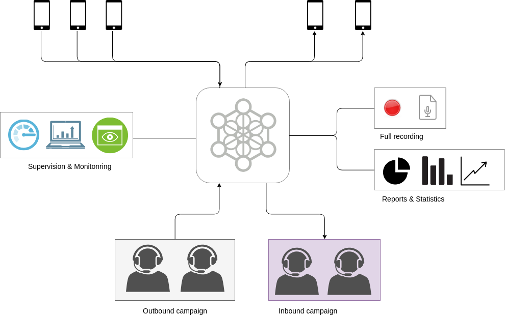

INTRODUCCION A OMNILEADS¶
OMniLeads es una solución Standalone para Contact Centers basada en Software Libre GPL V3, destinada a soportar la gestión, operación y administración de un Contact Center.
OMniLeads ofrece funcionalidades que permiten desarrollar operaciones de Call Center tanto Inbound como Outbound (campañas preview, manuales y predictivas). A partir de una instalación sencilla, se puede montar toda una operación de Contact Center ya sea dentro del marco de una compañia u organización que necesita su propio Contact Center integrado al PBX operativo dentro de su sistema de telefonía, así como también funcionando como Núcleo de Comunicaciones de una compañía que brinda servicios de Customer Contact (Business Outsorocing Process - BPO).
De gestión y operación 100% Web, los agentes disponen de una interfaz basada WebRTC para la gestión de comunicaciones mientras que los supervisores utilizan WebRTC para realizar acciones de channel spy, coaching de agentes, gestión de QA o three way conferences. Por otro lado, los administradores cuentan con una interfaz que permite mantener usuarios, campañas, bases de datos, a su vez extraer métricas y estadísticas, gestionar las grabaciones de las comunicaciones entre otras funcionalidades.
OMniLeads cuenta con su propio engine e interfaz de configuración de funciones de telefonía, permitiendo adminsitrar múltiples troncales SIP y su enrutamiento de llamadas salientes de acuerdo a reglas/patrones de marcado así como también enrutamiento de llamadas entrantes con la posibilidad de utilizar IVRs y/o Condicionales de tiempo a la hora de encaminar una numeración DID hacia una campaña entrante.
Por si quedan dudas: OMniLeads NO es un módulo de “call center” que añade reportería y supervisión a un sistema PBX. OMniLeads fue concebido desde cero, como una plataforma Standalone orientada y optimizada para el manejo de campañas telefónicas en el marco del Contact Center
Cómo lo obtengo ?¶
Nuestro repositorio se encuentra disponible en GitLab, para libre descarga, instalación y uso del Software.
Donde se puede instalar ?¶
OMniLeads puede correr sobre las distribuciones de GNU/Linux; CentOS7, Debian-9 y Ubuntu Server 18.04.
Cómo lo instalo ?¶
Dentro del código del proyecto, se dispone de un script de instalación basado en Ansible que permite instalar el producto sobre cualquier SO de los mencionados anteriormente. En la sección Instalación de ésta pagin se detalla el proceso, en sus diferentes tipos de instalación.
Características y funcionalidades de OMniLeads¶
INSTALACIÓN¶
En el siguiente video se expone paso a paso el proceso de instalación más básico (self-hosted script)
En las próximas páginas del presente capítulo, detallaremos la ejecución de cada tipo de instalación.
Tipos de instalación¶
Existen tres formas en la que OMniLeads puede ser instalador. En la presente sección se detalla cada proceso.
SETTING INICIALES¶
En esta sección se plantean las configuraciones escenciales a realizar una vez que dejamos instalada una instancia de OMniLeads.
En el vídeo; una típica configuración posterior a la instalación de OMniLeads.
Dentro de la sección se profundiza al respecto.
CONFIGURACIÓN DE ACCESO A LA PSTN¶
OMniLeads facilita mediante configuración web, la posibilidad de mantener troncales SIP de acceso a la PSTN. Éstos troncales son invocados por reglas de enrutamiento de llamadas salientes, en las cuales se puede especificar qué tipo de llamadas son procesadas por cada troncal SIP. Además los troncales pueden ser configurados en modo failover
En el video se expone una configuración típica y escencial que permite dejar activo un troncal SIP y una ruta de acceso a la PSTN desde OMniLeads a un sistema PBX basado SIP.
Para profundizar al respecto se recomienda leer el resto del capítulo.
CAMPAÑAS¶
Todo procesamiento de comunicaciones entre “el exterior” y un agente de OMniLeads es encapsulado sobre una campaña. En este capítulo se aborda todo lo inherente a la gestión de campañas Entrantes y Salientes (manuales, preview y dialer)
En el video se expone una introducción conceptual a las campañas en OMniLeads, ejemplificando además paso a paso la creación de:
- Base de contactos
- Calificaciones de campañas
- Formulario de campaña
- Agentes
En el resto del capítulo cubrimos cada tipo de campaña.
METRICAS, REPORTES, GRABACIONES Y SUPERVISION¶
Dentro de este capítulo se aborda todo lo inherente a la extracción de informarción que arroja el sistema respecto a estadísticas, métricas, reportes, grabaciones, supervisión en tiempo real, etc.
GESTIONES DEL ADMINISTRADOR IT¶
En esta sección se cubren algunas tareas inherentes al administrador técnico de OMniLeads. Cuestiones como la configuración de bajo nivel del módulo de discador predictivo, gestión de actualizaciones, backup & restore y cambio de dirección IP de la plataforma.